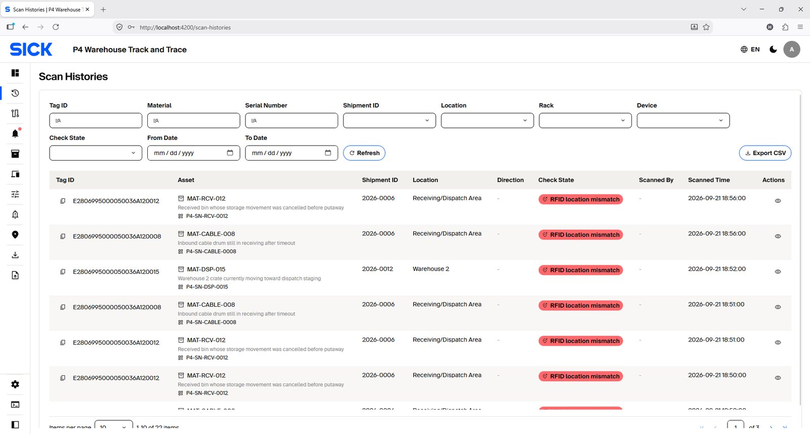
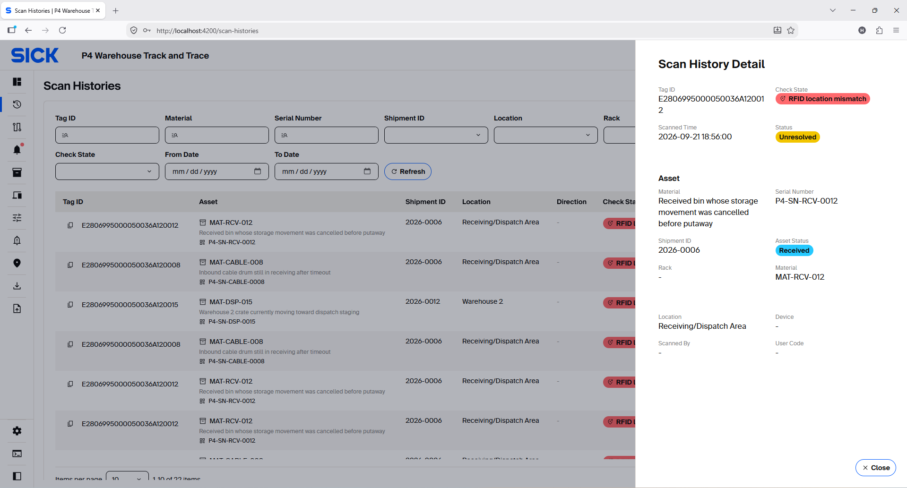
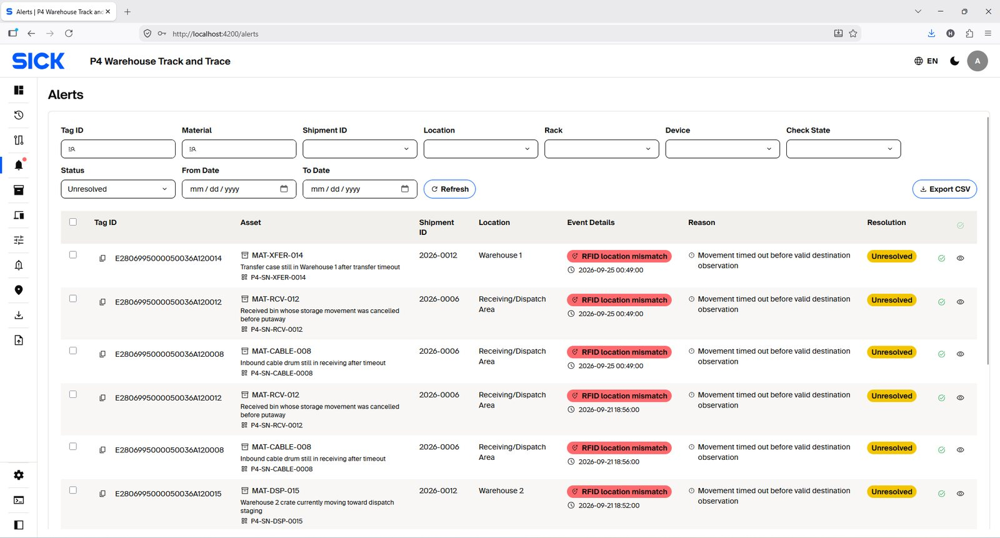
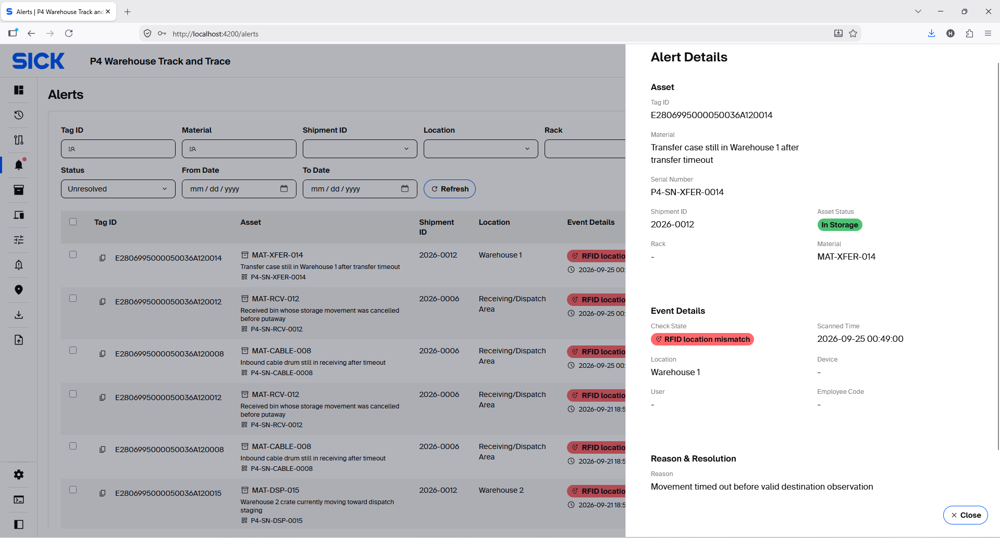
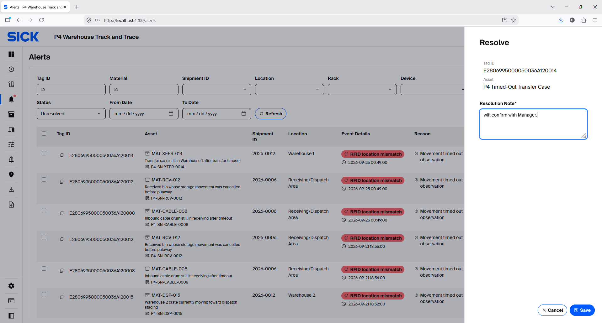
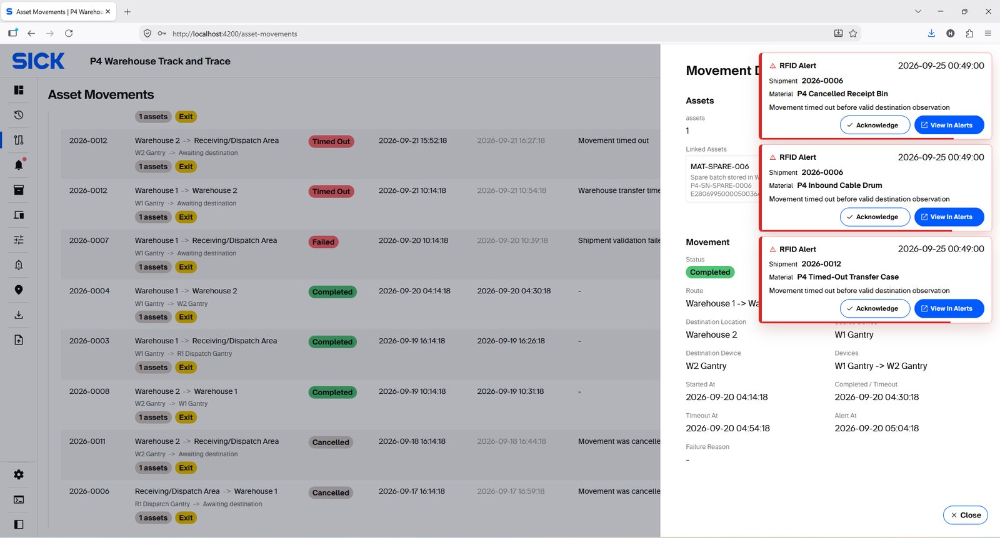

Monitoring & Alerts
Use Scan Histories and Alerts to trace RFID activity, investigate exceptions and confirm system outcomes.
Scan Histories
Scan Histories store operational RFID observations. Filter by Asset, Tag ID, Device, Location or result, then open Details for the validation outcome.


Alerts
Alerts show validation failures that need follow-up. Open an Alert to review the reason, Asset/Shipment, Location, Device and related Scan History. Resolve it only after investigation.



Real-time Alert popup behavior

- Up to several alerts can stack on screen.
- The popup shows Shipment/Material/reason when available.
- Acknowledge resolves the linked Alert with the note “Acknowledged from alert popup”, then closes the popup.
- View in Alerts opens the Alerts page filtered to the relevant unresolved item.
- If the popup auto-closes, the unresolved Alert remains on the Alerts page.
Do not acknowledge just to clear the screen. Acknowledge
performs a real resolution action for the linked Alert.